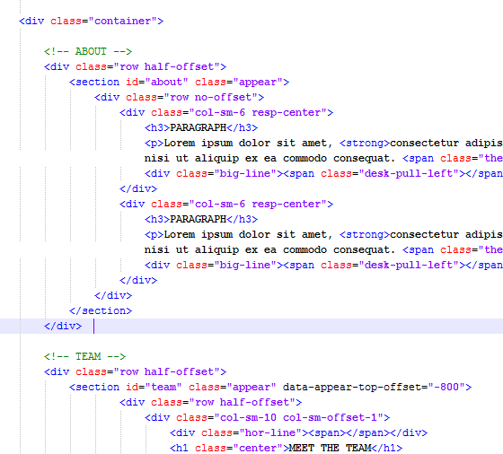

Updated: 01/09/2015
Created: 01/06/2014
By: Vivaco
Email: office@vivaco.com
Thank you for purchasing our theme. If you have any questions that are beyond the scope of this help file, please feel free to email via my user page contact form here. Thanks so much!
Startuply theme comes in two flavours located in separate folders each of them completely isolated and can work withouteach other:
The first one is the plain HTML that works out of the box straight in your browser and is what you are looking for in most cases to start editing the template. The second one is a builder that requires some additional setup and PHP enabled webhosting to run, more info on it can be found in enclosed documentation in Startuply_HTML_v2.0/Documentation/Startuply_Builder
This theme is a responsive one page layout with one column made on Bootstrap 3.0 foundation so please refer to original docs for more info (http://getbootstrap.com/css/). If you would like to place or make a full screen width element - please place it outside of this div. The general template structure is the same throughout the template.
The template consists of:
All of the boxed blocks within the main content area are nested within a div with an class of "container" Here is the general structure.
If you would like to edit the color preset of the theme you should do "Replace all" this color #ff7701 with the desired one or use any of those predefined ones :
* Pink - ff5f9b * Green - 39c8b7 * Blue - 59bbd7 * Berry - fe6760 * Orange - ff7200
This template is built on Bootstrap 3.1.1 foundation and uses several CSS files:
While you can surely edit any file you want, please note that main template styles reside in styles.css file. If you would like to edit a specific section of the site, simply find the appropriate label in the CSS file, and then scroll down until you find the appropriate style that needs to be edited.
/*========================================================================== RESETS AND MASTER STYLES ========================================================================== */ some code /*========================================================================== GENERAL & RE-USABLE ADJUSTMENTS ========================================================================== */ some code ------------- etc, etc.
If you would like to edit a specific section of the site, simply find the appropriate label in the CSS file, and then scroll down until you find the appropriate style that needs to be edited.
Since version 2.0 we now have included all LESS files and Grunt packaging script this template to make it easier for everyone with advanced skills to edit the template even faster and easier!
Less is a CSS preprocessor which drastically improves CSS development time and efifciency adding such things as CSS nesting, variables, mix-ins and more other cools things. Less documentation can be found here LESS Docs Apart from the Less itselft we also use very handy mix-in library for it named LessHat, some documentation for it can be found here LessHat Docs Modern browser cannot process less files directly so they should be compiled into default CSS files. There are a lot of ways doing so, we will list two of the most used ones:
First Option - is very fast and easy but can be used only as a temporary solution. Less files can be compiled into working CSS on the fly with less.js script. Just include less.js and styles.less inside your html document head, please do not change the inclusion order!
<link rel="stylesheet/less" type="text/css" href="styles.less" /> <script src="less.js" type="text/javascript"></script>
Second option (preferred) is to setup Less compiler with Node.js and Grunt, please follow these steps in order to do so:
All done, now you can use Grunt!
If you run grunt from your console the script will compile
If you run grunt color from your console the script will compile
If you run grunt production from your console the script will compile all files as well as minified files:
If you run grunt watch from your console (works only if you have local web server) the script will watch for all changes in your .less files and compile them real-time (greatly improves CSS development speed and convenience, no more refreshes every time!), also these scripts will be compiled:
Also, if you install LiveReload (Chrome or Firefox) and have grunt watch running the webpage will be updated autiomatically in real-time when any .less script is updated, how awesome is that!
These scripts are the bare minimum for StartuplyHTML theme to work
All other scripts are not mandatory but are required for additional theme functionality:
The main theme JS script assets/js/startuply.js has several settings that we decided to move in the header for easier configuration
But there is more: startuply.js is made this way so it can also listen to data-attributes of html elements. These are the same parametrs as above but in camelcase e.g.: smoothScrollSpeed becomes data-smooth-scroll-speed. This way you can control the general setting in master config but then fine-tune the element behaviour per page!
//Flexislider for testimonials
if($('.testimonials-slider').length != 0) {
$('.testimonials-slider').flexslider({
manualControls: '.flex-manual .switch',
nextText: "",
prevText: "",
startAt: 1,
slideshow: false,
direction: "horizontal",
animation: "slide"
});
};
// Headhesive for sticky menu init
var options = { // set options
offset: '#showHere',
classes: {
clone: 'fixmenu-clone',
stick: 'fixmenu-stick',
unstick: 'fixmenu-unstick'
}
};
Startuply v2.0 comes with a lot of forms built it in found in forms.html file. You can copy paste them to any page you need and they will work. All forms found on other pages also do work and by default it just sends the form data to the specified email so if you need to edit the receivers email as well as the mail text you will need to edit signup.php file.
The form is validated and then submitted on the register.html page which then sends the data to process-form.php file that just gets the variables and forards the data to your email
ANY form in Startuply can have Mailchimp enabled, In order to do so please follow these steps:
Please refer to the original script author if you need a deeper insight - http://stackoverflow.com/questions/5025455/some-basic-mailchimp-api-examples-required
All links to social networks are hardcoded and should be changed directly in the code
I've used the following images, icons or other files as listed.
We would be glad to help you if you have any questions relating to this theme. No guarantees, but we will do our best to assist. If you have a more general question relating to the themes on ThemeForest, you might consider visiting the forums and asking your question in the "Item support" section.
Vivaco Media